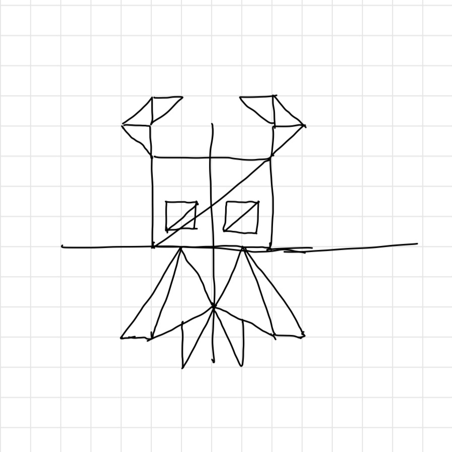

Awesomeness Points: Added an additional alpha slider, added diamond to shapes, and added lines to fill in the gaps during mouse drag
Please use a browser that supports "canvas"

Red
Green
Blue
Alpha
Shape Size
(Circle) Segment Count